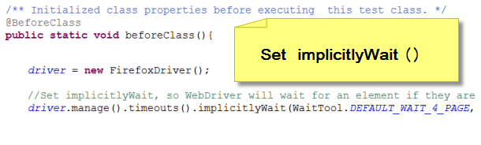

How to handle elements and AJAX wait in Selenium 2 (WebDriver).

Press Spacebar or Tab To Get Started
To view this presentation please use the latest Firefox, Chrome, or Safari browser.
The best practice is to set implicitlyWait() at the beginning of each test, and use WebDriverWait() for waiting an element, or AJAX element to load.
implicitlyWait(): tells WebDriver to wait for an element if they are not immediately available.
So, WebDriver does not throw NoSuchElementException immediately.
WebDriverWait(): checks for the given condition every 500 milliseconds
until it returns successfully or timeout.
However, implicitlyWait() and WebDriverWait() do not work well together in the same test.
You would have to nullify implicitlyWait() before calling WebDriverWait
because implicitlyWait() also sets the "driver.findElement()" wait time.
confusing isn't it
WaitTool
So, I create WaitTool
WaitTool solves the complexity of ImplicitWait and WebDriverWait, and provides easy methods to use.
WaitTool handles the following tasks at the behind scene.
1. nullifying implicitlyWait()
2. executing WebDriverWait (), and return element
3. reset implicitlyWait() again
Let’s test a AJAX Site.
1. Go to page: www.w3schools.com/ajax/default.asp
2. click the button to call AJAX
3. See the text change
At the beginning of a test, set implicitlyWait()
1. Go to the page
2. click the button to call AJAX
3. Use WaitTool.waitForJavaScriptCondition()
4. See the text change
Here are the source codes
Project Home: https://github.com/ChonC/wtbox
wiki: https://github.com/ChonC/wtbox/wiki
WaitTool source code
AJAX wait example
Thank you!
Chon Chung - @chon_chung